Rooted
A local leader with deep roots and a vision for their city.
Two Four Eight develops the kind of leaders who multiply disciples, form faith communities, and raise up the next generation, without depending on us to keep going.
Seven years and a model that works. In 2019, we began investing in the first leaders across South African townships. Today the movement is self-led and multiplying on its own.
These numbers represent leaders, not programs.
Locally-owned movements built to outlast our involvement.
We’d welcome 30 minutes to share what we’re seeing in cities and hear what matters to you.
We find local leaders already positioned to start movements in their cities. We invest in them. We coach them. And when the movement no longer needs us, we step back.
We don’t move fast and hope for the best. We go deep, acting as catalyst and coach, igniting what couldn’t start without us, then guiding it to maturity.
Every potential movement leader gets:
An experienced practitioner who walks alongside them for the long haul, coaching through real challenges, on the ground, as they happen.
Cohorts, cross-city learning, and peers doing the same work. Community that stretches vision and sharpens practice over time.
Structured coaching, not academic curriculum. Practical tools for team health, mission clarity, outreach, and leader multiplication. Built for depth that scales.
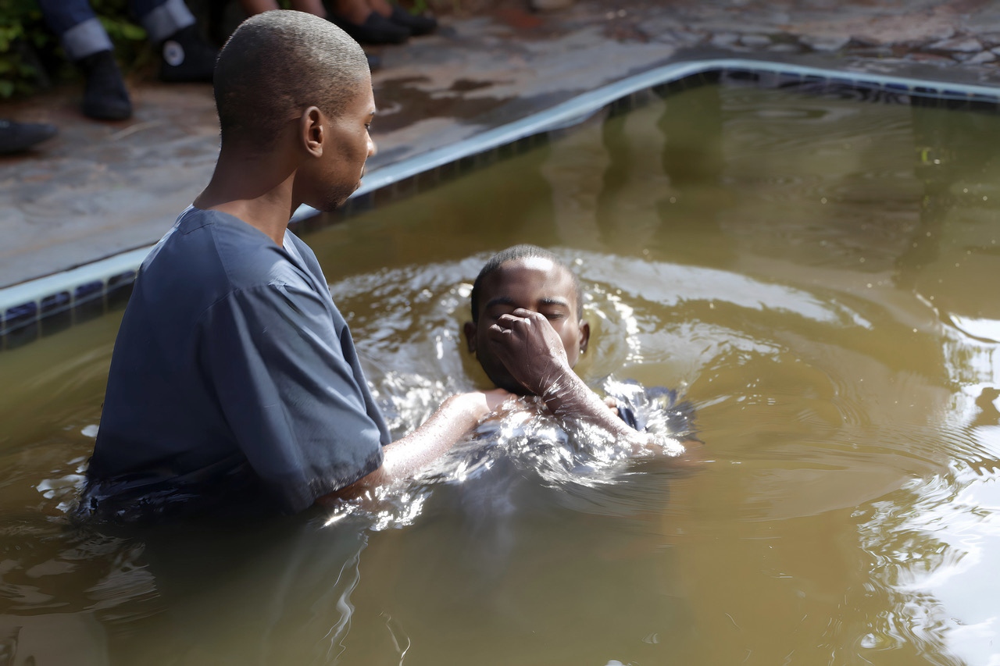
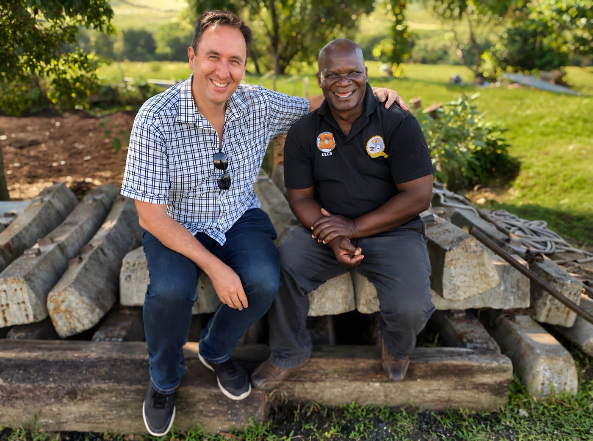
We track five signs that tell us whether a leader, team, and movement are alive, healthy, and built for lasting impact.
A local leader with deep roots and a vision for their city.
Disciples make disciples through their own networks.
Lives change. Communities begin to heal.
Simple faith communities form in homes and workplaces.
Leaders develop the next generation beyond their own city.
See what movement leaders and partners say about working with Two Four Eight.
"Two Four Eight excels at coaching teams through hands-on learning, real-life application, and problem-solving. Their learning communities help disciple-makers grow, no matter where they are on the journey."

Sam
Hungary
"Over several years, Two Four Eight has encouraged me with honest coaching, practical tools, and a deep love for Jesus. They celebrate wins, share their own lessons, and stick with leaders through the hard times."

Ryan
Scotland
"Two Four Eight provides excellent content and builds simple processes that build real community. Their resources create capacity for continuous learning. We value their humility and focus on authentic relationships."

Scott
Asia
"We work in South Africa’s townships, vibrant yet violent, full of character yet challenging. Two Four Eight have been faithful friends and partners, always there when needed. Together, we’re learning daily how to introduce Jesus more effectively to our people."

Loyiso
South Africa
We keep overhead low and coaching capacity high. The co-ordinating team builds the tools and supports the work being done by thousands of volunteers worldwide.


We’d welcome 30 minutes to share what we’re seeing in cities and hear what matters to you.
Cities move 24 hours a day. The gospel must move with them, through ordinary people, in everyday relationships, everywhere at once.
Churches gather people. But most of the city will never walk through their doors. No building, event, or programme can be everywhere the city lives.
So we focus on what venues cannot do: the gospel spreading believer to believer, through the natural networks of the city, reaching the people no gathering will.
Not a replacement for the church. An extension of her reach.
A group of friends who love Jesus, love one another, and make disciples among the lost and the broken. That is it.
They meet in homes, workplaces, and neighbourhoods, wherever life already happens. Anyone who follows Jesus can facilitate one. Easy to start. Built to multiply.
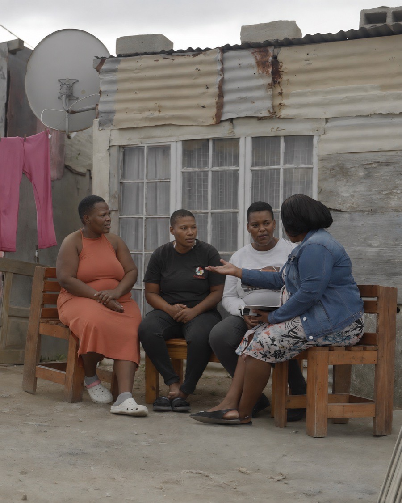
Cities are hundreds of overlapping worlds: neighbourhoods, cultures, professions, generations. No single congregation could reach them all. A network of communities can.
Townships, suburbs, and business districts.
Language, heritage, and community groups.
Workplaces, common struggles, and shared passions.
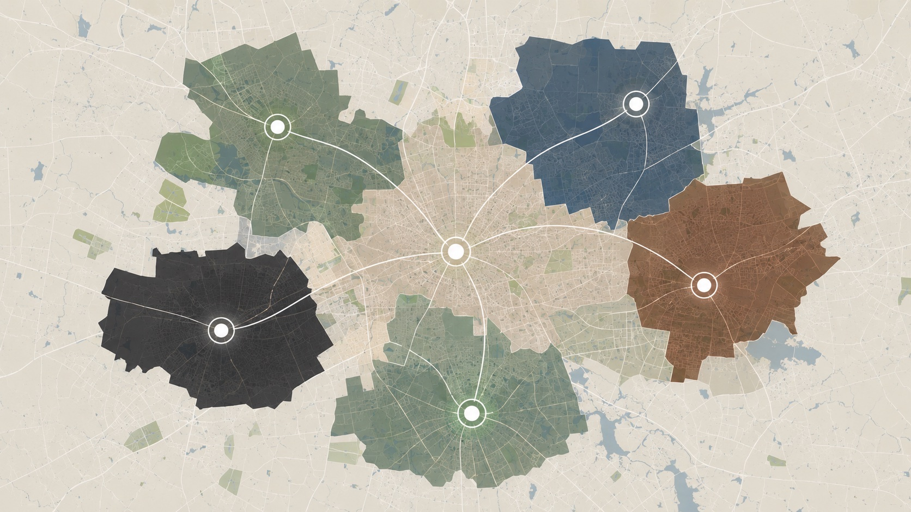
Each community takes the shape of its context. The DNA stays the same. The goal is that no one in the city is more than a relationship away from a community of Jesus followers.
We work alongside local churches, but our lane is different. We ignite what could not start without us, then guide it to maturity.
We train ordinary believers to start communities in their own networks. We coach local facilitators toward health and multiplication. We mentor the leaders of leaders until they take our place.
We build capacity, not dependency.
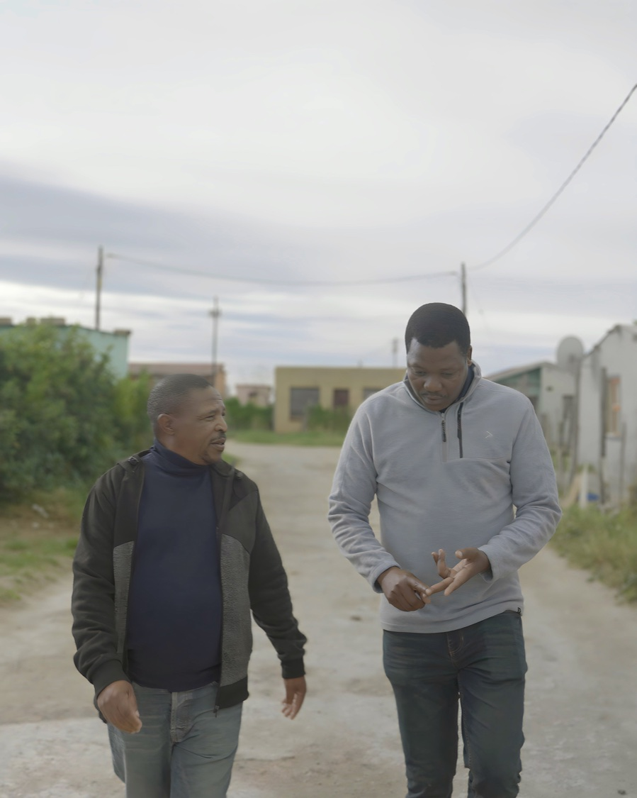
As cities become megacities, the leadership of the past, command, control, and predictable plans, is increasingly unable to build the future. Cities are too fast, too diverse, too interconnected to be managed from the top.
So we guide leaders to lead differently: to read their city, discern where God is already at work, and cultivate life rather than control outcomes.
Movements do not need more generals. They need more skilled gardeners who know how to cultivate life.
Cities are not machines or corporations that can be managed. They are living ecosystems. Movements in cities grow the same way: through relationships, networks, and shared life, not central control.
So we cultivate rather than construct. As communities connect with one another and with local churches, the city fills with a living web of Kingdom life, growing in ways no single organisation could engineer.
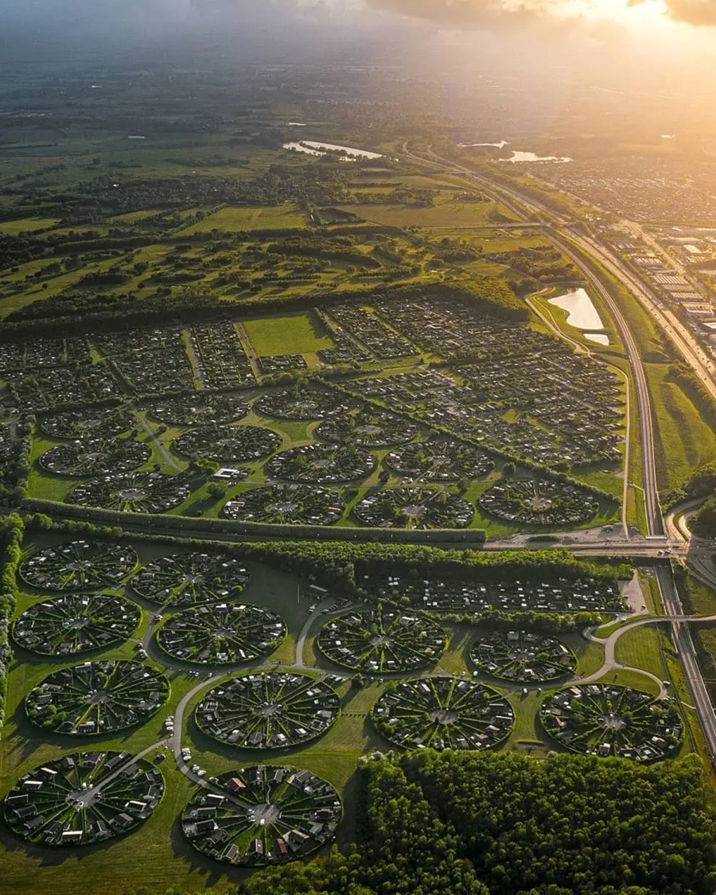
Multiplication is the idea behind our name. Ordinary Jesus followers and simple faith communities are not containers for holding people. They move at the forefront of multiplication.
We equip ordinary people to be carriers of the gospel into their own relational networks. Two become four. Four become eight. Disciples make disciples, communities start communities. And because simple communities need no buildings, budgets, or staff, multiplying never gets heavier.
That is how a city gets saturated: not one large thing, but thousands of small, living, connected things.
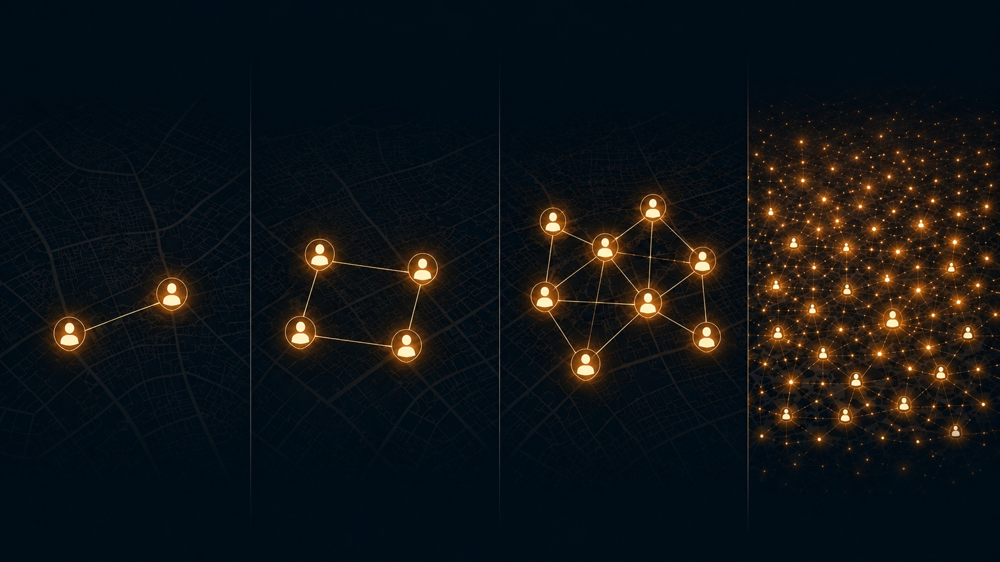
Your partnership does not fund buildings or bureaucracy. It funds the training and coaching that helps communities start, stay healthy, and keep multiplying long after we have stepped back.
Most of what we know about gospel movements was learned in rural villages. Cities play by different rules, and the leaders working in them deserve better than borrowed answers. So we went and listened.
Urbanisation is outpacing the church’s ability to adapt. Movement leaders on the ground are navigating complexity, transience, and diversity that older models were never built for, often with little more than instinct and imported strategies.
These leaders do not need another theory. They need grounded insight from practitioners who are actually seeing disciples multiply in cities. Better research means better decisions on the ground.
A multi-year listening project studying how God is multiplying disciples in the world’s cities. Our strategy is to align with what God is actually doing.
For you to study movements in cities, you must listen to its stories.
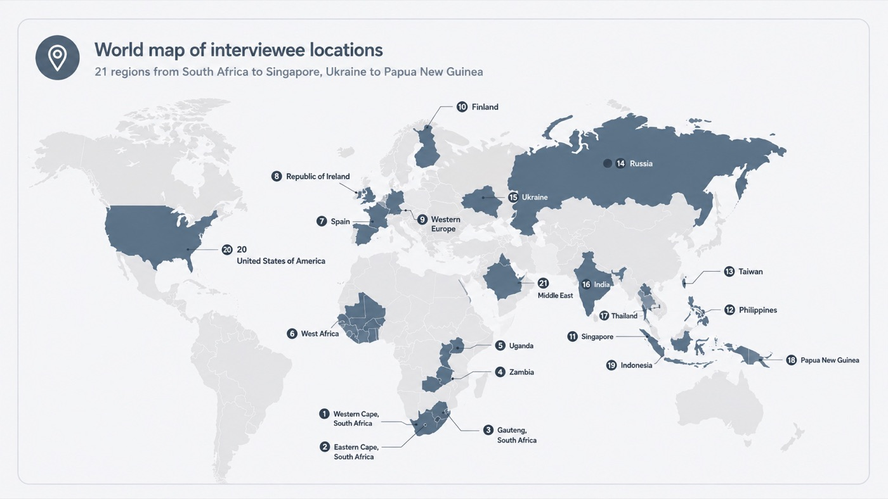
Over four years, we conducted in-depth interviews with practitioners seeing real multiplication in some of the world’s most complex urban environments, including cities marked by persecution, instability, and active conflict. Every interview was transcribed, coded, cross-analysed, and checked back with the practitioners themselves.
Fifteen patterns surfaced again and again across continents. The full report unpacks all fifteen, with the practitioners' own voices, common challenges, and emerging practices. Five are highlighted here.
Disciple-making grows where people discover Scripture together and respond in obedience.
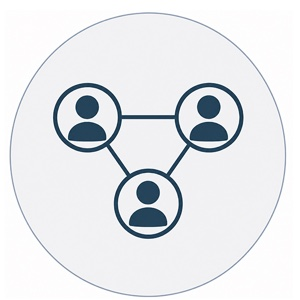
The gospel spreads through natural affinity groups and relational networks.
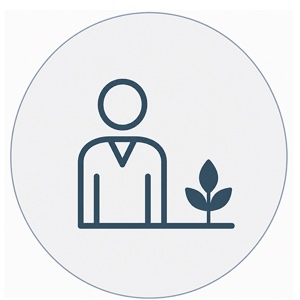
Impact expands when embedded leaders are empowered to lead.
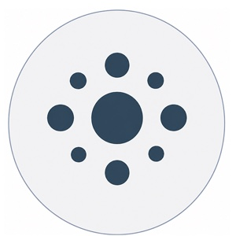
Deep investment in a handful of key people creates ripples that reach thousands.
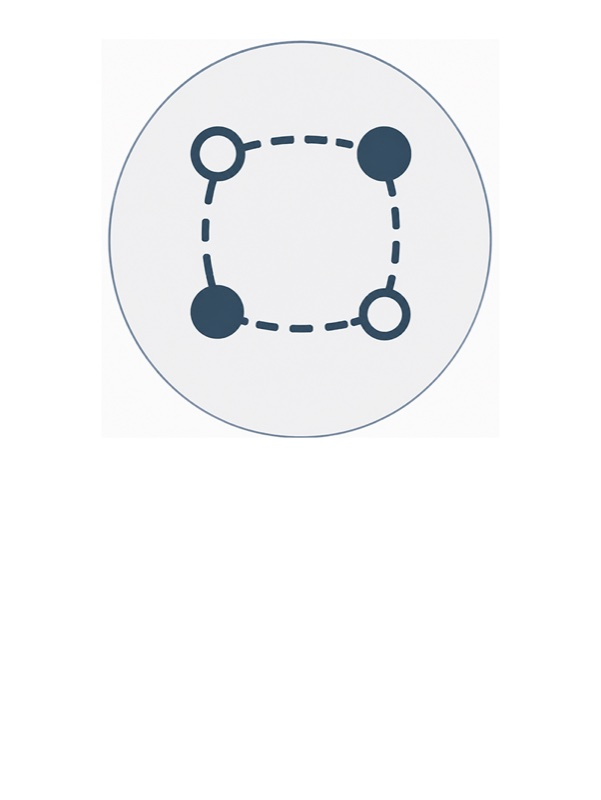
Clear rhythms, loosely held forms, simple enough to adapt to any context.
We do not offer these findings as formulas. They are field-level patterns, offered with honesty about their limits, and intended to spark reflection, conversation, and context-specific experimentation.
Movements are not built from checklists. They grow where leaders discern what God is doing in their own city.
This is not research for the shelf. Every finding feeds directly into how we train, coach, and equip movement leaders, refining our city-focused curriculum and sharpening our strategy in real time.
Movement Insights: Phase 2 is free to download. Fifteen observations, common challenges, and emergent practices from 40 practitioners across the cities of the world. Want to talk through what these findings mean for your city or team?
You are not funding a program. You are funding a multiplier: a system that outlasts and outgrows our involvement.
Every investment targets a specific leader at the point of greatest impact. Our expertise is knowing the right catalyst for the right moment to unlock momentum.
You’re funding a multiplier. A system that outlasts and outgrows our involvement. Addition reaches hundreds. Multiplication reaches cities.
We measure five dimensions across every city, every quarter. AI-informed evaluation means you always know what your investment is strengthening and why.
Our role as catalyst ends when local leaders no longer need us. The measure of success is movements that outlast our involvement.


Funds the development of 2-3 Movement Leaders for a year, each growing movements of multiple Faith Communities.
Funds the full coaching infrastructure over a year for one early-stage city growing into a mature movement.
Funds a Venture: launching a new local organisation with capacity to reach multiple cities and raise up new Movement Guides.
We are currently investing in leaders at different points of the movement journey. Different cities at different thresholds.
.jpg)
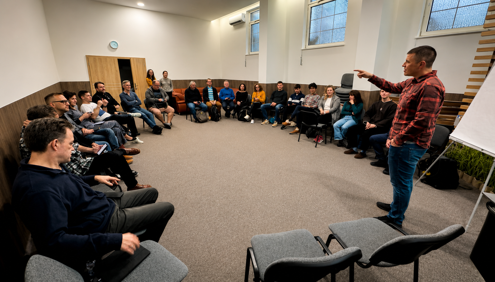
.jpg)
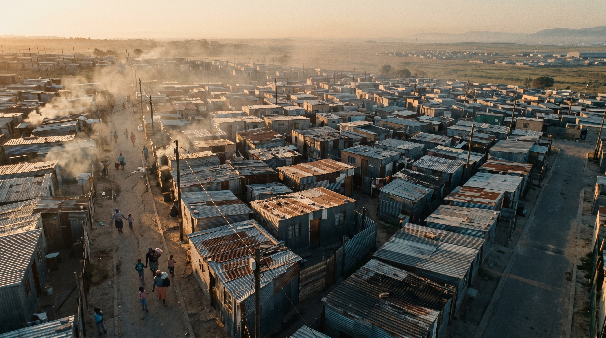
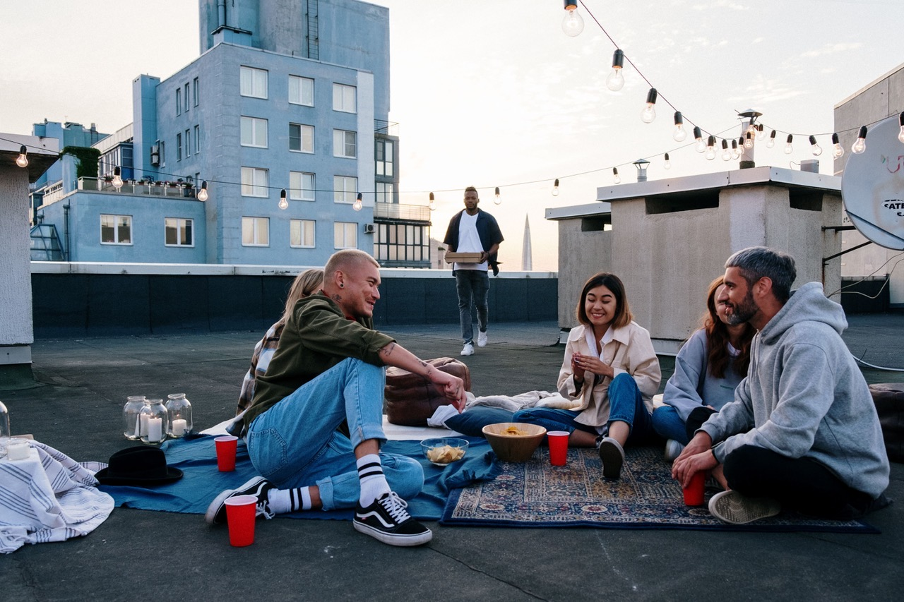
We’d welcome 30 minutes to share what we’re seeing in cities and hear what matters to you.